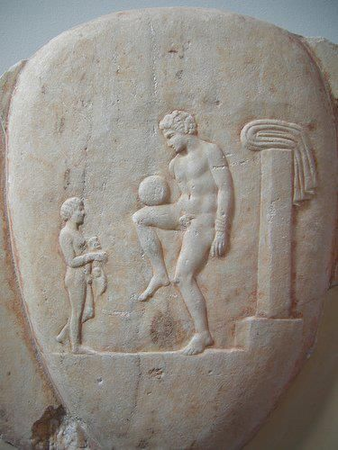

History

Through the centuries there have been many variations of sports that echo the origins of what soccer is today. In Ancient Mesoamerican cultures, they would play with a ball made of rock that symbolized the sun. The captain of the losing team would then be sacrificed to the gods. In the 2nd and 3rd century a game called Cuju was known to be played in China. This involved played with a round ball on a square field, it was later spread to Japan and practiced in ceremonial forms. The Ancient Greeks and Romans were the first to implement balls made of leather and were filled with hair. However the game was not used as entertainment but as a training exercise to improve footwork.
Soccer as it is known today got its origins in 12th Century England. During that time there were a lot less rules, use of hands was legal and the sport was a lot more physical. These matches were mainly played in meadows and roads in England. Due to its violent nature, this version of the game was met with controversy and thus was banned for several centuries as it would often result in property damage, serious injury and sometimes death. It would go on to be banned in the 17th century and again in 1835. 2 schools, Rugby and Eton, continued to play the game with 2 different styles of playing. In Rugby, soccer was played with the ability to use hands, this developed into the game of Rugby known today. While in Eton it was played with only the use of your feet.
Evolution of Soccer
- 5000BC-AD: Games resembling soccer are played in China, Japan, Grece, Egypt and Native America.
- 60BC:China and Japan were the first have an international game. In Chinese it was called Tsu Chu and Kamari in Japanese.
- 600AD-1600AD: Mexico and Central America create a rubber ball used to play their version of soccer. It was played on a 40-50 Foot long field, shooting the ball through a mounted stone ring.
- 700s: First soccer games were played in Britain. Games had no rules and were violent. One game involved kicking around the head of a Danish Prince that England defeated in war.
- 1331:King Edward III of England passed the law banning the playing of the game. This was due to deaths occuring during play.
- 1572:Queen Elizabeth I of England introduces laws that could sentance a football player to jail for a week followed by penance in a church for playing the sport.
- 1314-1660:Through this time period, 6 monarchs have tried to ban Soccer due to its violent nature. The game however was still played.
- 1600:Native Eskimos played a game called Aqsaqtuk on ice, using balls stuffed with grass.
- 1605:The game of soccer became legal again in England.
- 1815:Eton College of England established a set of rules for the game of Soccer. Rugby college also played soccer with different rules which later formed into the game of Rugby that is played today.
- 1827:Harvard had institued the first anual game of Soccer played on the first Monaay of the new school year. Games were a little violent due to limited rules, the event was known as "Bloody Monday".
- 1848:Rules of soccer were further standardized and adopted by all the schools, colleges and universities.
- 1863: Football Association was formed on October 26th, 1863.